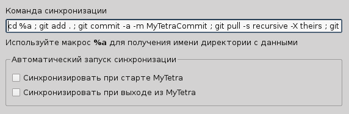

Синхронизацию в MyTetra можно сделать с помощью следующих средств:
Самое простой метод синхронизации - это разместить каталог с базой MyTetra в каталоге облачной системы хранения данных. Далее надо зайти в "Настройки" - "Синхронизация" и поставить флажок "Периодическая проверка дерева записей на изменение сторонними программами". По такому методу работают многие пользователи, и даже есть группы людей, которые одновременно совместно работают над одной базой данных. При использовании такого механизма синхронизации желательно наличие хорошего интернет-канала.
Более сложный метод синхронизации - это синхронизация через систему контроля версий. Желательно, чтобы система онтроля версий поддерживала атомарность. Атомарность - это такое свойство системы, при котором все файлы обновляются на состояние, соответсвующее одному моменту времени. Свойством атомарности обладает система контроля версий Git, и я использую её для синхронизации. В качестве хостинга я использую GitHub.com.
GitHub.com предоставляет бесплатный тарифный план для хранения публичных репозитариев в открытом виде. На GitHub можно разместить и закрытые репозитарии, заплатив несколько долларов в месяц.
Так как MyTetra имеет встроенный механизм шифрования, то пользователь может разместить свои данные бесплатно и безопасно у всех на виду. В любом случае, на бесплатном аккаунте GitHub никто не сможет изменить данные пользователя - все создаваемые на GitHub репозитарии имеют режим только чтение (Read Only) для других пользователей. Пока не будут прописаны дополнительные пользователи, которые могут иметь доступ на запись в репозитарий, хранимым данным пользователя ничего не угрожает.
Что необходимо для синхронизации через Git
Для того, чтобы сделать синхронизацию через git, нужно иметь две вещи: установленный git и аккаунт на GitHub. Тех, кто никогда не работал с git и GitHub, я отправляю читать статью (см. раздел Git & GitHub руководство).
Создание репозитария с данными MyTetra
Перво-наперво нужно создать новый пустой репозитарий в системе GitHub. Далее будем считать, что для синхронизации вы создали репозитарий с именем mytetra. Создание репозитария производится в веб-интерфейсе GitHub.
Затем нужно выяснить, где находится на вашем компьютере директория с данными программы MyTetra.
Для версий до 1.44.154: Запускаем MyTetra, нажимаем "Инструменты" -> "Настройки" -> "Основные". В поле "Директория с данными" нажимаем кнопочку с тремя точками [...] и смотрим, где расположена директория /data.
Для версий 1.44.154 и выше: В MyTetra появился менеджер баз данных. Запускаем MyTetra, нажимаем "Файл" - "Управление базами данных". Смотрим, где расположена директория /data выбранной базы данных.
Все дальнейшие действия из консоли следует выполнять внутри директории /data.
Итак, переходим в директорию /data и даем следующие команды:
git init
git add .
git commit -a -m "first commit"
git remote add origin git@github.com:username/mytetra.git
git push -u origin master
Вместо username надо, естественно, написать свой GitHub-логин . В результате этих действий, в каталоге /data появится подкаталог .git - это системный каталог программы git. Если при выполнении команд не возникло ошибок, значит, начиная с этого момента, данные уже лежат на сервере GitHub. И их можно посмотреть через web-интерфейс системы GitHub.
Помните, что заливая данные на GitHub, вы делаете их открытыми всему интернету! Поэтому, если у вас есть приватные данные, которые нельзя никому показывать, не забудьте предварительно их зашифровать! Шифровать данные нужно перед тем, как будете делать заливку на сервер, так как система git позволяет просматривать историю данных.
Настройка синхронизации MyTetra с сервером репозитария
В MyTetra, нажимаем "Инструменты" -> "Настройки" -> "Синхронизация". Видим вот такие настройки:

В поле "Команда синхронизации" задаем следующую команду.
Для пользователей Linux:
cd %a ; git add . ; git commit -a -m MyTetraCommit ; git pull -s recursive ; git push
Для пользователей Windows:
cd \ & cd "%a" & git add . & git commit -a -m MyTetraCommit & git pull -s recursive & git push
Внимание! Если данные находятся на диске, отличным от C:, надо добавлять в команду смены каталога еще и смену диска. Например, вместо "cd \" следует писать "cd D:\".
После чего добавляем в MyTetra пару записей, редактируем уже существующие, удаляем ненужные. Затем нажимаем на кнопку синхронизации, и, если всё в порядке, на сервере GitHub будут зафиксированы эти изменения.
Отладка
Вопрос: Что делать, если данные не уходят на сервер GitHub, а лог синхронизиции в окне синхронизации так быстро промелькивает, что ничего не успеваешь прочитать?
Ответ: В конец команды синхронизации добавьте команду, которая остановит вывод. Пользователи Linux могут добавить ; read. Пользователи Windows могут добавить & pause 0. Внимательно прочитайте что написано в логе, возможно вы сразу поймете в чем причина неполадки.
Вопрос: Что делать, если на этапе синхронизации окно синхронизации не закрывается самостоятельно, а чего-то ждет?
Ответ: Такое может возникнуть, если git пытается что-то запросить от пользователя через консольный ввод. Причем, самого запроса в логе может быть не видно. В этом случае выключаем MyTetra, переходим в каталог /data (вы уже знаете, где он находится), и начинаем последовательно выполнять команды из строки с командой синхронизации. Вначале выполняем:
git add .
Потом выполняем:
git commit -a -m MyTetraCommit
И так далее. На какой-то команде может возникнуть какая-то ошибка. Обычно эта ошибка возникает из-за неправильного конфигурирования git или ключей шифрования. Исправляем ошибку, так же по шагам проверяем работу, и дальше в MyTetra всё должно работать без подобных плясок.
Синхронизация данных MyTetra с другими компьютерами
Ранее мы рассмотрели, как сделать первичное наполнение данных в репозитарии, и как синхронизироваться с сервером. Но пока что мы получили только "резервное копирование данных" - ведь у нас настроено только одно место с синхронизируемыми данными.
Теперь нужно рассказать, как настроить второе (и все последующие места) для синхронизации данных. Под термином "место" следует понимать, к примеру, один компьютер. То есть, если у вас два компьютера - один домашний, другой на работе, и вам нужно иметь единую базу MyTetra, значит у вас две точки синхронизации, то есть два места, которые должны синхронизироваться друг с другом.
Внимание! Здесь речь идет о сихронизации одного набора данных между несколькими копиями MyTetra. Если у вас на домашнем компьютере уже есть одна база данных, а на рабочем компьютере уже есть другая база данных, и вы хотите их объединить, то речь идет о слиянии баз. Процедуры слияния баз в MyTetra не предусмотрено. Возможно, кто-то захочет написать скрипт для слияния баз - пожалуйста сделайте его, если у вас есть возможности и желание.
Итак, на втором компьютере, где мы хотим сделать синхронизацию, инсталлируем MyTetra, выясняем месторасположение каталога /data (как это сделать, написано выше). Выходим из MyTetra, затем заходим в каталог /data, и всё в нём удаляем. Затем, находясь в каталоге /data, даем команду:
git clone git@github.com:username/mytetra.git .
где вместо username не забываем подставить свой логин на GitHub-е. Да-да, в конце этой команды стоит пробел и точка. Так нужно, чтобы данные закачались прямо в текущий каталог а не в подкаталог с именем репозитария. Данная команда выкачает с GitHub все данные в актуальном состоянии.
Признаком того, что данные закачались правильно, будет наличие файла mytetra.xml, подкаталога /base и подкаталога /.git в каталоге /data. Так же возможно наличие других подкаталогов и файлов.
Далее запускаем MyTetra и видим, что она уже работает с полной копией данных, которые были получены с сервера GitHub. Далее в MyTetra, нажимаем "Инструменты" -> "Настройки" -> "Синхронизация", и устанавливаем точно такую же команду синхронизации, которая написана в предыдущем разделе.
Всё! Теперь мы имеем две программы MyTetra, которые могут синхронизироваться друг с другом через сервер GitHub.
Особенности алгоритма синхронизации MyTetra
Команды синхронизации, указанные выше, обеспечивают следующие принципы синхронизации.
Сервер главный. Вся синхронизация идет относительно последних данных, хранящихся на сервере. В момент синхронизации сервер принимает от клиента изменения, котрые были сделаны пожже, чем последнее зафиксированное состояние файлов на сервере. А так же сервер выдает клиенту те изменения, которые клиент еще не получал.
Учитывается связанность по времени. Грубо говоря, если вы в первой копии данных удалите ветку с записями и засинхронизируетесь, а во второй копии, не синхронизируясь начнете редактировать записи в этой ветке, то после синхронизации второй копии всё ваше редактирование будет забыто и ветка удалена. Это произойдет потому, что вначале произошло событие удаления ветки (и оно было зафиксировано!), а все последующие действия внутри этой ветки не имеют смысла.
Помните, что пользуясь системой контроля версий git, вы всегда можете восстановить данные на конкретный момент времени. Как это делать - разбирайтесь сами, изучайте git и его команды - это очень мощная система.